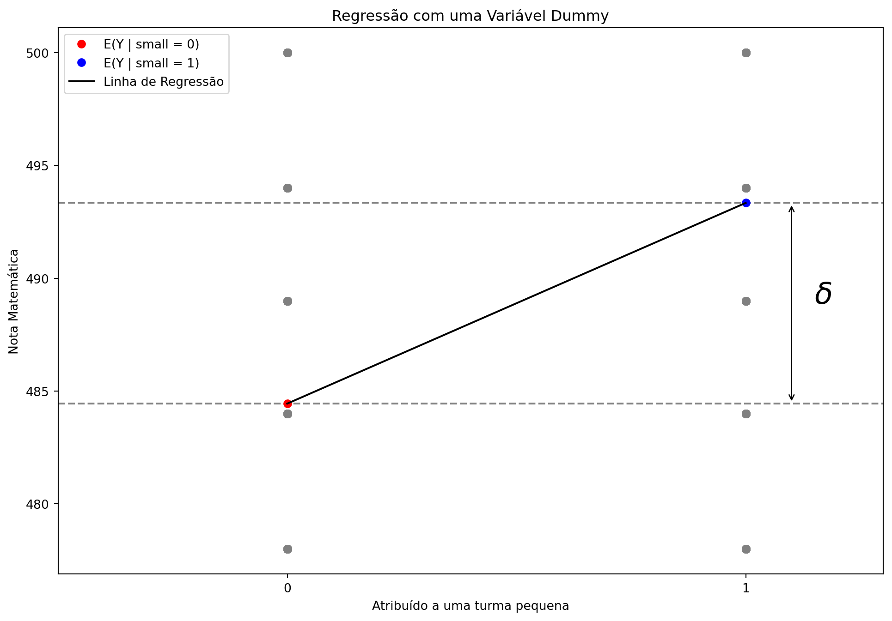
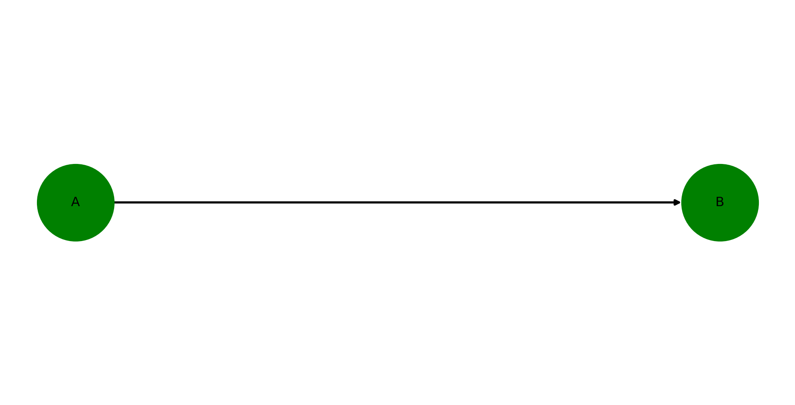
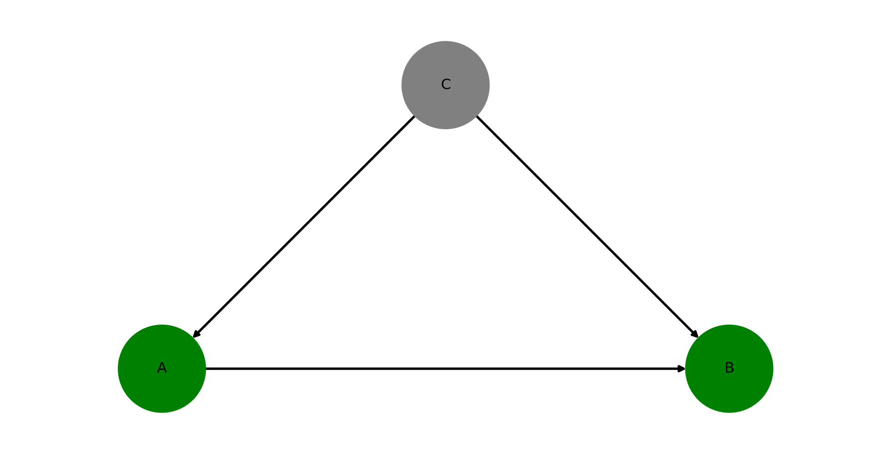
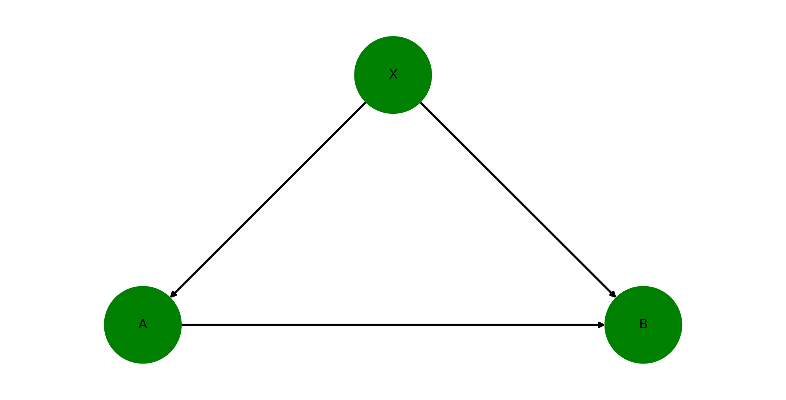
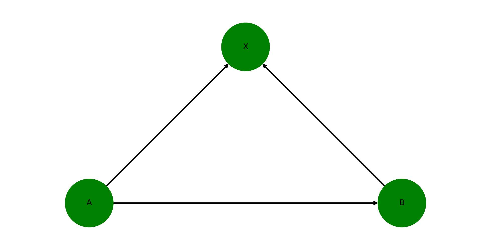
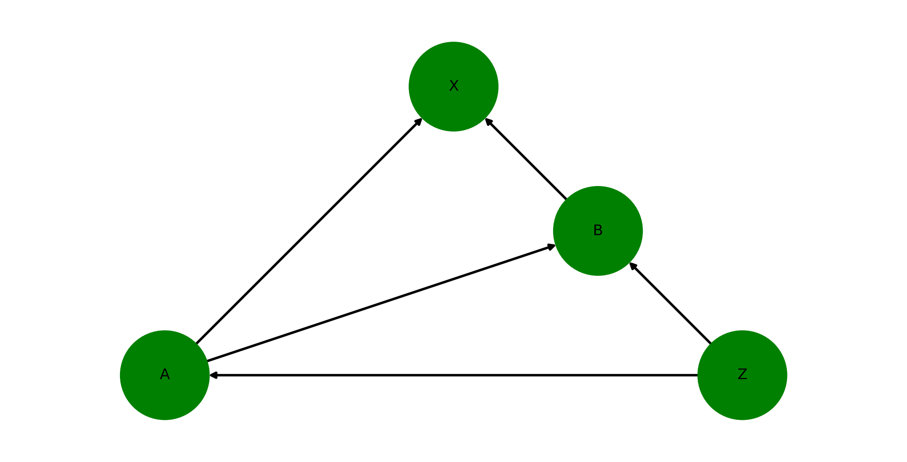

| grade | test | mean_regular | mean_small | diff_small_regular |
|---|---|---|---|---|
| k | math | 484.446 | 493.342 | 8.89519 |
| k | read | 435.764 | 441.134 | 5.36954 |
Econometria III
Introdução a Causalidade
Rafael Bressan
Introdução a Inferência Causal
Causalidade versus Correlação
Framework de Resultados Potenciais a.k.a. Modelo Causal de Rubin
Experimentos Aleatorizados (Randomized Controlled Trials - RCTs)
Aplicação empírica. Tamanho de turma e performance do estudante
Por que Estudar Causalidade?

Por que Estudar Causalidade?

Causalidade e Economia
Fazer inferência causal a partir de dados pode ser visto como a vantagem comparativa dos economistas!
Diversos campos fazem estatística. Mas poucos treinam seus estudantes para compreender causalidade.
Conhecimento de inferência causal é o que torna economistas úteis tanto no setor privado (e.g. empresas de tecnologia) e setor público (e.g. avaliação de políticas públicas)
Ok, chega de pregar causalidade. 😃
O Conceito de Causalidade
Causalidade: do que estamos falando?
Dizemos que
XcausaYse nós intervirmos no valor de
Xsem mudar nada a mais …então
Ytambém mudará como resultado.
O ponto pricipal é sem mudar nada a mais, também referido por ceteris paribus (tudo o mais constante).
⚠️ Isto NÃO significa que
Xé o único fator que causaY.
Correlação vs Causalidade
Correlação não é o mesmo que causalidade tornou-se um mantra, mas você consegue dizer porquê?
Algumas correlações são obviamente espúrias e não tem nada a ver com causa e efeito (e.g. spurious correlation website).

Correlação vs Causalidade: Fumar e Câncer de Pulmão
Mas nem todas as correlações são fáceis de diferenciar
Fumar causa câncer de pulmão?
Hoje em dia, nós sabemos que a resposta é SIM!
Mas, voltemos para 1950
Início de um grande aumento no número de mortes por câncer de pulmão…
… que ocorre após um rápido aumento no consumo de cigarros

- É tentador argumentar que fumar cigarros causa câncer de pulmão baseado neste gráfico.
Correlação vs Causalidade: Fumar e Câncer de Pulmão
Na época, muitos eram céticos a esta hipótese, incluindo famosos estatísticos.
Macro fatores de confusão:
Outros fatores macro que podem causar câncer também mudaram entre 1900 e 1950:
Asfaltamento de estradas,
Inalação de fumaça de motores (vapores de gasolina com chumbo),
Maior poluição atmosférica geral.
Auto seleção:
Fumantes e não fumantes podem ser diferentes em primeiro lugar:
Seleção de características observáveis: idade, escolaridade, renda, etc.
Seleção de características não observáveis: genes (a hipotética teoria do genoma de Fisher).
Correlação vs Causalidade: Outros Exemplos
Por que a correlação observada entre anos de estudo e renda não reflete o efeito causal da educação?
Indivíduos que optam por obter mais educação provavelmente diferem daqueles que não: talvez tenham maior habilidade inata, gostem de estudar e sejam bons nisso \(\rightarrow\) autosseleção
Taxa de emprego e o nível do salário mínimo não reflete o efeito causal do salário mínimo?
Aumento de salário mínimo em momentos em que a taxa de emprego é alta \(\rightarrow\) causalidade reversa / simultaneidade
Crescimento econômico e desenvolvimento financeiro não reflete o efeito causal do setor financeiro?
Talvez crescimento econômico leve ao desenvolvimento financeiro e não o contrário \(\rightarrow\) causalidade reversa / simultaneidade
Link com a Teoria Econômica
A teoria econômica nos diz que os indivíduos se comportam para maximizar sua utilidade
Assim, eles não escolhem agir de forma aleatória \(\rightarrow\) dizemos que o comportamento do indivíduo é endógeno
Devemos ser suspeitos de qualquer correlação encontrada nos dados
Como podemos fazer reivindicações causais então?
O framework de Resultados Potenciais será o nosso guia.
O framework de Resultados Potenciais
Frequentemente chamado de Modelo Causal de Rubin em homenagem ao estatístico Donald Rubin, que generalizou e formalizou esse modelo na década de 1970.
Idéia-chave: Cada indivíduo pode ser exposto a vários estados alternativos de tratamento. - fumar cigarros, fumar charutos ou não fumar, - crescendo em um bairro pobre versus um bairro de classe média versus um bairro rico, - estar em uma turma pequena ou grande.
Por praticidade, deixe esta variável de tratamento \(D_i\) ser uma variável binária:
\[ D_i = \begin{cases} 1 \textrm{ se indivíduo $i$ é tratado} \\\\ 0 \textrm{ se indivíduo $i$ não é tratado} \end{cases} \]
Grupo de tratamento todos os indivíduos tais que \(D_i = 1\).
Grupo de controle todos os indivíduos tais que \(D_i = 0\).
O framework de Resultados Potenciais
Nessa estrutura, cada indivíduo tem dois resultados potenciais, mas apenas um resultado observado \(Y_i\):
\(Y_i^1\): resultado potencial se o indivíduo \(i\) receber o tratamento,
\(Y_i^0\): resultado potencial se o indivíduo \(i\) não receber o tratamento.
Na vida real, observamos apenas \(Y_i\) que pode ser escrito como:
\[Y_i = D_i \times Y_i^1 + (1- D_i) \times Y_i^0\]
- Problema fundamental da inferência causal: para qualquer indivíduo \(i\), observamos apenas um dos resultados potenciais (Holland, 1986).
O framework de Resultados Potenciais
- O resultado potencial que não é observado existe em princípio, é chamado de resultado contrafactual.
| Grupo | \(Y_i^1\) | \(Y_i^0\) |
|---|---|---|
| Tratamento \((D_i = 1)\) | Observável como \(Y_i\) | Contrafactual |
| Controle \((D_i = 0)\) | Contrafactual | Observável como \(Y_i\) |
A partir deles podemos definir o efeito de tratamento individual \(\delta_i= Y_i^1 - Y_i^0\).
\(\delta_i\) mede o efeito causal do tratamento \(D_i\) no resultado \(Y_i\) do indivíduo
O efeito do tratamento não pode ser observado no nível individual (Por quê?), nossos estimandos serão médias populacionais.
Efeito Médio do Tratamento (ATE)
Efeito médio mais amplo possível:
\[ \begin{aligned} ATE &= \mathop{\mathbb{E}}(\delta_i) \\ &= \mathop{\mathbb{E}}(Y_i^1 - Y_i^0) \\ &= \mathop{\mathbb{E}}(Y_i^1) - \mathop{\mathbb{E}}(Y_i^0) \end{aligned} \]
- O ATE mede simplesmente a média dos efeitos individuais do tratamento sobre toda a população.
(Apêndice: Tratamento Médio nos Tratados e Tratamento Médio nos Não Tratados)
Exemplo: Classe Pequena vs. Grande
Resultados potenciais para os alunos em turma pequena \((Y^1)\) ou grande \((Y^0)\):
| Aluno | \(Y^1\) | \(Y^0\) | \(\delta\) |
|---|---|---|---|
| 1 | 5 | 2 | 3 |
| 2 | 6 | 4 | 2 |
| 3 | 3 | 6 | -3 |
| 4 | 5 | 4 | 1 |
| 5 | 10 | 8 | 2 |
| 6 | 2 | 4 | -2 |
| 7 | 5 | 2 | 3 |
| 8 | 6 | 4 | 2 |
| Média | 5.25 | 4.25 | 1.0 |
\[ \begin{align} \color{#d90502}{\text{ATE}} &= \mathbb{E}(\delta) \\ &=\mathbb{E}(Y^1) - \mathbb{E}(Y^0) \\ &= 5.25 - 4.25 \\ &= 1.0 \end{align} \]
o efeito causal médio de estar na turma pequena em relação à grande nas notas é de 1 ponto.
⚠️ nem todos os alunos se beneficiaram igualmente com o tratamento!
Chamamos isso de efeito heterogêneo do tratamento.
O problema da Inferência Causal
Na prática, temos o mesmo problema de falta de dados para calcular o ATE que tivemos para \(\delta_i\). Falta \(Y_i^1\) ou \(Y_i^0\) para cada \(i\).
A partir dos dados, podemos calcular a Diferença Simples nas médias dos Resultados (DSR) para ambos os grupos:
\[ \begin{aligned} DSR &= \mathop{\mathbb{E}}(Y_i^1|D_i=1) - \mathop{\mathbb{E}}(Y_i^0|D_i=0) \\ &= \underbrace{\frac{1}{N_T}\sum_{i=1}^{N_T}(Y_i|D_i=1)}_{\text{resultado médio do grupo de tratamento}} - \underbrace{\frac {1}{N_C}\sum_{i=1}^{N_C}(Y_i|D_i=0)}_{\text{resultado médio do grupo de controle}} \end{aligned} \]
Diferença Simples nas médias dos Resultados: um exemplo
| Estudante | \(Y\) | \(D\) | \(\delta\) |
|---|---|---|---|
| 1 | 5 | 1 | 3 |
| 2 | 6 | 1 | 2 |
| 3 | 6 | 0 | -3 |
| 4 | 4 | 0 | 1 |
| 5 | 10 | 1 | 2 |
| 6 | 4 | 0 | -2 |
| 7 | 5 | 1 | 3 |
| 8 | 6 | 1 | 2 |
A diferença simples na média dos resultados:
\[ \begin{aligned} DSR &= \frac{5+6+10+5+6}{5} - \frac{6+4+4}{3} \\ &\approx 6.4 - 4.67 \approx 1.73 \end{aligned} \]
A DSR é bem maior que o ATE!
A DSR irá (quase sempre) falhar em capturar o efeito causal do tratamento
Observe que esse tipo de comparação “ingênua” é frequentemente feita por jornalistas, políticos, cientistas mal treinados (mas você não mais! 😉)
Problemas com comparações ingênuas
Reescrever a DSR para fazer o efeito de tratamento individual \((\delta_i)\) aparecer na equação.
\[ \begin{aligned} DSR &= \mathop{\mathbb{E}}(Y_i^1|D_i=1) - \mathop{\mathbb{E}}(Y_i^0|D_i=0) \\ &= \mathop{\mathbb{ E}}(Y_i^0 + \delta_i | D_i = 1) - \mathop{\mathbb{E}}(Y_i^0 | D_i = 0) \end{aligned} \]
Para simplificar, suponha que o efeito do tratamento seja constante entre as pessoas: para todo \(i, \delta_i = \delta\).
\[DSR = \delta + \underbrace{\mathop{\mathbb{E}}(Y_i^0 | D_i = 1) - \mathop{\mathbb{E}}(Y_i^0 | D_i = 0)}_\text{Viés de Seleção}\]
E por hipótese: \(ATE = \mathop{\mathbb{E}}(\delta_i) = \mathop{\mathbb{E}}(\delta) = \delta\)
(Apêndice: quando a suposição de tratamento constante é relaxada, outro termo de viés aparece.)
- ⚠️ \(\mathbb{E}(Y_i^0 | D_i = 1)\) é um resultado contrafactual, portanto, não observável!
Aleatorização resolve o problema da inferência causal!
Experimentos aleatorizados: você atribui aleatoriamente pessoas a um tratamento e a um grupo de controle.
Nesse caso, a atribuição do tratamento é independente dos resultados potenciais.
Em particular, não há razão para \(\mathop{\mathbb{E}}(Y_i^0 | D_i = 1)\) ser diferente de \(\mathop{\mathbb{E}}(Y_i^0 | D_i = 0)\)
- Portanto, o viés de seleção é igual a 0.
Com atribuição aleatória, temos:
\[ DSR = \mathop{\mathbb{E}}(Y_i^1|D_i=1) - \mathop{\mathbb{E}}(Y_i^0|D_i=0) = ATE\]
- 👉 Podemos estimar o ATE diretamente a partir dos dados!
Experimentos Aleatorizados
Frequentemente chamados de Randomized Controlled Trials (RCT).
Os primeiros RCTs foram realizados há muito tempo (séculos XVIII e XIX), principalmente em Medicina.
No início do século XX foram popularizados por estatísticos famosos como J. Neyman ou R.A. Fisher.
Desde então, eles tiveram uma influência crescente e se tornaram progressivamente uma confiável ferramenta para avaliação de políticas públicas.
Quanto à economia, o Prêmio Nobel de Economia de 2019 foi concedido a três expoentes dos RCTs, Abhijit Banerjee, Esther Duflo e Michael Kremer, “por sua abordagem experimental para aliviar a pobreza global”.
Tamanho da turma e desempenho dos alunos
- Suponha que regredimos as notas médias dos alunos em matemática ou leitura no tamanho da turma.
\[\textrm{matemática}_i = b_0 + b_1 \textrm{tamanho}_i + e_i\]
Sem maiores informações sobre a origem dos dados coletados, \(b_1^{OLS}\) só poderá estabelecer uma associação e não uma relação causal.
Seleção de alunos: seleção em escolas com turmas de tamanhos diferentes. Pais tenham a noção de que turmas menores são melhores, eles colocarão seus filhos nessas escolas.
Seleção de professores: os professores escolhem escolas com turmas menores porque é mais fácil ensinar nestas e, se houver competição, os professores melhores terão as vagas.
Um RCT cuidaria de todos esses vieses!
O Experimento do Projeto STAR
Tennessee Sstudent/Teacher Achievement Ratio Experiment (ver Krueger (1999))
Financiado pela legislatura do Tennesse por um custo total de aprox. $ 12 milhões.
A experiência começou no ano letivo de 1985-1986 e durou quatro anos.
11.600 alunos e professores foram distribuídos aleatoriamente para um dos 3 grupos a seguir, do jardim de infância até a terceira série:
Turma pequena: 13-17 alunos por professor,
Aula regular: 22-25 alunos,
Classe regular/auxiliar: 22-25 alunos com um auxiliar do professor em tempo integral.
O Experimento do Projeto STAR
A aleatorização ocorreu dentro das escolas.
As habilidades de matemática e leitura dos alunos foram testadas por volta de março de cada ano.
Houve um problema de atrito não aleatório, mas vamos ignorá-lo.
O Experimento do Projeto STAR
Acabamos de ver que em um RCT o Efeito Médio do Tratamento é obtido computando as diferenças nos resultados entre os grupos de tratamento e controle.
Vamos nos concentrar apenas em:
Um grupo de tratamento: pequenas turmas,
Um grupo de controle: aulas regulares,
Uma série: jardim de infância (k).
- Qual é a interpretação para esses ATEs?
RCT em forma de Regressão
\[ Y_i = D_i Y_i^1 + (1 - D_i) Y_i^0 \]
Fatorando por \(D_i\) e substituindo \(Y_i^1 - Y_i^0\) por \(\delta_i\), obtemos:
\[ \begin{aligned} Y_i &=Y_i^0 +D_i (Y_i^1 - Y_i^0) \\ &= Y_i^0 +D_i \delta_i \end{aligned} \]
Assumindo \(\delta_i = \delta\), para todo \(i\), então \(Y_i = Y_i^0 + D_i \delta\)
Adicionando \(\mathbb{E}[Y_i^0] - \mathbb{E}[Y_i^0] = 0\) ao lado direito:
\[ \begin{aligned} Y_i &= \mathbb{E}[Y_i^0] + D_i \delta + Y_i^0 - \mathbb{E}[Y_i^0] \\ &= b_0 + \delta D_i + e_i \end{aligned} \]
onde \(b_0 = \mathbb{E}[Y_i^0]\) e \(e_i = Y_i^0 - \mathbb{E}[Y_i^0]\)
O Experimento do Projeto STAR: Regressão
A última equação se parece exatamente com o modelo de regressão simples! (com \(\delta = b_1\))
Vamos, portanto, estimar o ATE de ser designado para uma turma pequena em notas de matemática.
Queremos estimar o seguinte modelo: \(\text{math score}_i = b_0 + \delta \text{small}_i + e_i\), com
\[ \text{small}_i = \begin{cases} 1 \textrm{ se atribuído a uma turma pequena} \\\\ 0 \textrm{ se atribuído a uma turma regular} \end{cases} \]
O Experimento do Projeto STAR: Regressão
Modelo de regressão que queremos estimar: \(\text{math score}_i = b_0 + \delta \text{small}_i + e_i\)
| Dep. Variable: | math | R-squared: | 0.008 |
| Model: | OLS | Adj. R-squared: | 0.008 |
| No. Observations: | 3359 | F-statistic: | 28.09 |
| Covariance Type: | nonrobust | Prob (F-statistic): | 1.23e-07 |
| coef | std err | t | P>|t| | [0.025 | 0.975] | |
| Intercept | 484.4464 | 1.150 | 421.133 | 0.000 | 482.191 | 486.702 |
| small[T.True] | 8.8952 | 1.678 | 5.300 | 0.000 | 5.605 | 12.186 |
Notes:
[1] Standard Errors assume that the covariance matrix of the errors is correctly specified.
O Experimento do Projeto STAR: Regressão
Lembre que: \(b_0 = \mathbb{E}[Y_i^0]\) e \(\delta = \mathbb{E}[Y_i | D_i = 1] - \mathbb{E}[Y_i | D_i = 0]\)
\(b_0=\)
484.4463784390792\(\delta=\)
8.895193170553284Regressão com Variável Dummy
Graficamente
O regressor em nossa regressão é uma variável binária, ou seja, uma variável que assume os valores VERDADEIRO ou FALSO (1 ou 0).

Regressão com Variável Dummy
Formalmente
Lembre-se do modelo de regressão: \(\text{math score}_i = b_0 + \delta \text{small}_i + e_i\)
\[ \begin{aligned} \mathbb{E}[\textrm{math score} | \text{small}_i = 0]&= \mathbb{E}[b_0 + \delta \text{small}_i + e_i | \text{small}_i = 0] \\ &= b_0 + \delta \mathbb{E}[\text{small}_i| \text{small}_i = 0] + \mathbb{E}[e_i|\text{small}_i = 0] \\ &= b_0 \end{aligned} \]
\[ \begin{aligned} \mathbb{E}[\textrm{math score} | \text{small}_i = 1]&= \mathbb{E}[b_0 + \delta \text{small}_i + e_i | \text{small}_i = 1] \\ &= b_0 + \delta \mathbb{E}[\text{small}_i| \text{small}_i = 1] + \mathbb{E}[e_i|\text{small}_i = 1] \\ &= b_0 + \delta \end{aligned} \]
\[\begin{aligned} ATE &= \mathbb{E}[\textrm{math score} | \text{small}_i = 1] - \mathbb{E}[\textrm{math score} | \text{small}_i = 0] \\ &= b_0 + \delta - b_0 \\ &= \delta \end{aligned} \]
- Já sabíamos disso, mas agora entendemos por que é verdade ✌️
Deficiências dos RCTs
Os RCTs têm uma validade interna muito forte, ou seja, eles podem estabelecer vínculos causais de forma convincente.
No entanto, eles têm algumas deficiências:
RCTs são caros,
RCTs podem enfrentar alguns problemas éticos: alguns tratamentos simplesmente não podem ser administrados às pessoas,
Os RCTs levam tempo e podemos ter limitação de tempo.
Interpretação dos resultados:
Validade externa: Resultados de um determinado RCT podem ser generalizados para outros contextos?
Desvendar os mecanismos que estão atuando pode ser difícil,
Aleatorização imperfeita, atrito, etc.
O que vem depois?
- Portanto, se não podemos administrar um RCT, isso significa que temos que encontrar uma maneira de fazer inferência causal a partir de dados observacionais (em oposição a dados experimentais).
2 casos amplos:
seleção ocorre em características observáveis: regressão múltipla
seleção ocorre em características não observáveis: múltiplas abordagens (e.g., variáveis instrumentais, diferença em diferenças, etc.)

Grafos Acíclicos Direcionados - DAG
Ferramenta gráfica para modelar relações causais
Composto de nós e arestas
- Nó representa uma variável
- Aresta é direcionada pela relação causal

Grafos Acíclicos Direcionados - DAG
Causalidade corre em apenas uma direção (acíclico)
Causalidade reversa e simultaneidade são complicados de serem representados em um DAG
Cadeia de efeitos causais (mecanismos)
Ausência de aresta significa ausência de efeito!
Um DAG representa um modelo causal teórico ou o conhecimento de um especialista no assunto
Variável Omitida em um DAG
Como representamos uma variável omitida (não observada) em um DAG?

A variável C é não observada e portanto, omitida
Entretanto, C é causa comum de A e B. Chamamos de variável de confusão
A e B estão correlacionados pelo caminho A <- C -> B, que não é causal (backdoor)
Efeito causal de A em B não está identificado
⚠️ Viés de variável omitida!
Identificação em um DAG
- Suponha que observamos uma variável X
- X ainda é uma variável de confusão.
- Podemos controlar para X e identificar nosso efeito causal

Condicionar em uma variável ao longo de algum caminho backdoor, bloqueia este caminho
Efeito causal de A em B é identificado condicional ao valor de X
Identificação em um DAG
::::{.columns} :::{.column width=“50%”} - Considere este outro DAG

:::
X agora é chamado de colisor (collider)
Tanto A quanto B afetam X
Os caminhos de A até B neste grafo
- A -> B
- A -> X <- B
Diferença crucial entre colisor e confusor
Caminho colisor é automaticamente bloqueado sem necessidade de condicionar!
👉 Efeito causal de A em B já está identificado!
Identificação em um DAG
- Identifique o efeito de A em B no seguinte DAG

Identificação em um DAG
Passos quando utilizando DAGs
Desenhe o grafo e qual efeito você quer identificar
Escreva todos os caminhos entre os nós de causa e efeito
Qual é o caminho direto?
Quais são os caminhos backdoor? Estão (ou podem ser) bloqueados?
Algumas ferramentas
📚 Leitura Recomendada
CUNNINGHAM, Scott. Causal Inference: The Mixtape, New Haven: Yale University Press, 2021. URL: https://mixtape.scunning.com/
ANGRIST, Joshua D.; PISCHKE, Jörn-Steffen. Mastering’metrics: The path from cause to effect. Princeton university press, 2014. URL: http://www.masteringmetrics.com/
ANGRIST, Joshua D.; PISCHKE, Jörn-Steffen. Mostly harmless econometrics: An empiricist’s companion. Princeton university press, 2009.
ATÉ A PRÓXIMA AULA!
Appendix
Average Treatment on the Treated and on the Untreated
Other conditional average treatment effects may be of interest:
Average Treatment on the Treated (ATT)
\[\begin{align} ATT &= \mathop{\mathbb{E}}(\delta_i | D_i = 1) \\ &= \mathop{\mathbb{E}}(Y_i^1 - Y_i^0 | D_i = 1) \\ &= \mathop{\mathbb{E}}(Y_i^1 | D_i = 1) - \mathop{\mathbb{E}}(Y_i^0 | D_i = 1) \end{align}\]
The ATT measures the average treatment effect conditional on being in the treatment group.
Example: the effect of participating in a training program (treatment) for those who participated (treatment group).
Average Treatment on the Untreated (ATU)
\[\begin{align} ATU &= \mathop{\mathbb{E}}(\delta_i | D_i = 0) \\ &= \mathop{\mathbb{E}}(Y_i^1 - Y_i^0 | D_i = 0) \\ &= \mathop{\mathbb{E}}(Y_i^1 | D_i = 0) - \mathop{\mathbb{E}}(Y_i^0 | D_i = 0) \end{align}\]
The ATU measures the average treatment effect conditional on being in the control group.
Example: the effect of attending a private school (treatment) for students from a public school (control group).
Note: In the majority of cases, ATE \(\neq\) ATT \(\neq\) ATU!
Problems with Naive Comparisons
Let’s now relax the assumption that the treatment effect is constant among all individuals.
After some tedious calculations that we skip, the SDO can now be decomposed as:
\[\begin{align} SDO &= ATE + \underbrace{\mathop{\mathbb{E}}(Y_i^0 | D_i = 1) - \mathop{\mathbb{E}}(Y_i^0 | D_i = 0)}_\text{Selection bias} \\ & \quad \quad \quad \quad + \underbrace{(1-\pi)(ATT - ATU)}_\text{Heterogenous treatment effect bias} \end{align}\]
where \(1 - \pi\) denotes the share of people in the control group.
So there is a novel source of bias that comes from the potential heterogeneity in the individual treatment effect \(\delta_i\).
- Selection bias: those who attend university are likely to have higher baseline cognitive skills (regardless of whether they actually attend college).
- Heterogeneous treatment effect bias: those who attend university may improve their cognitive skills more at university because they are more motivated.